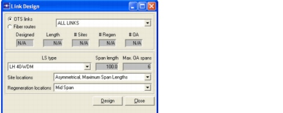
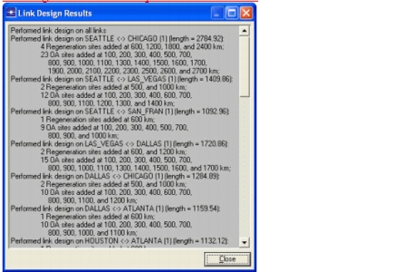
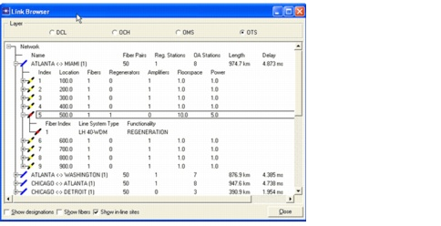
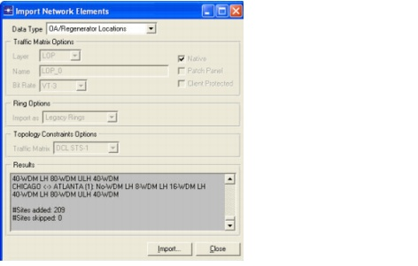

Network Design Operations > Link Design
Link Design
To overcome signal degradation on long fiber links, the signal must be amplified and regenerated at regular intervals. Amplifier and regenerator locations are calculated according to the transmission characteristics of the line system. This is accomplished through the Link Browser dialog box at the OTS layer or the Design > OTS Link Design dialog box. However, in a production network the locations are already known. You can import this information from a data file, as explained in the Importing and Exporting Data chapter of the SP Guru Transport Planner User Guide.
Example import files are located in the following directory:
Procedure 3-1 Calculating Amplifier and Regenerator Locations
- Open the WDMGuru_Examples project.
- Select File > Open....
- Select the WDMGuru_Examples project, then click Open.
The example project, which contains multiple scenarios, is loaded. The Australia scenario appears in the workspace.
- Select Scenarios > Switch To Scenario > USA to load the USA scenario in the workspace.
- Do OTS link design to calculate the amplifier and regenerator locations.
- Select Design > Link Design....
The Link Design dialog box appears.
You can select one link or design all the links simultaneously.
- Choose ALL LINKS to design all links.
- You can design a link for a specific WDM line system type or for ALL LSTYPES (a worst-case link design). For this example, select LH 40-WDM to design for the default line system type (LH 40-WDM). The other options refer to the actual placement of the sites on the link (refer to the SP Guru Transport Planner User Guide).
- Select Asymmetrical, Maximum Span Lengths and Mid Span, then press the Design button.

The Link Design Results window appears with a list of sites added on the links.

- Close the Link Design Results and the Link Design dialog box.
- Inspect the OTS links.
- Select Network > Link Browser (or double click on a link) to open the link browser.
- Select OTS to inspect the links in the OTS layer. Mark the Show in-line sites option.
- Click on the + icon (next to the links) to display the details of the amplifier and regeneration site locations. A yellow icon indicates an amplifier site, while a red icon indicates a regenerator site.
- Click on the + icon (next to the sites) to see the functionality performed on the specific fibers in that site.

- Close the link browser.
- Import the amplifier and regenerator locations.
- Select File > Import > Network Elements....
- Select OA/Regenerator Locations as the Data Type to import.
- Click Import and select the file WDMGuru_import_USA_OA_regen_locations.csv in the directory
<install_dir>\<release>\models\std\wdmguru\examples.- After you select the data file, 209 in-line amplifier or regenerator sites are imported. Note that the site locations calculated in the previous paragraph have been overwritten by the imported site locations.

- Close the Import Network Elements dialog box.
- Inspect the OTS links.
- Select Network > Link Browser (or double click on a link) to open the link browser.
- Select OTS to inspect the links in the OTS layer. Mark the Show in-line sites option.
- Click on the + icon (next to the links) to display the details of the amplifier and regeneration site locations.
- Click on the + icon (next to the sites) to see the functionality performed on the specific fibers in that site.
- Close the link browser.
- Close the project.
End of Procedure 3-1
Note—To export the OTS in-line sites, use the File > Export > Network Elements... dialog box. Exporting information from a simple network into a file is a good way to discover the required file format in case you want to generate a file by hand, or by some other means.
| Home © 1987-2007 OPNET Technologies, Inc. All Rights Reserved. This software may be covered by one or more U.S. Patents. See complete patent notice in the Legal Notices section. OPNET Support Center |